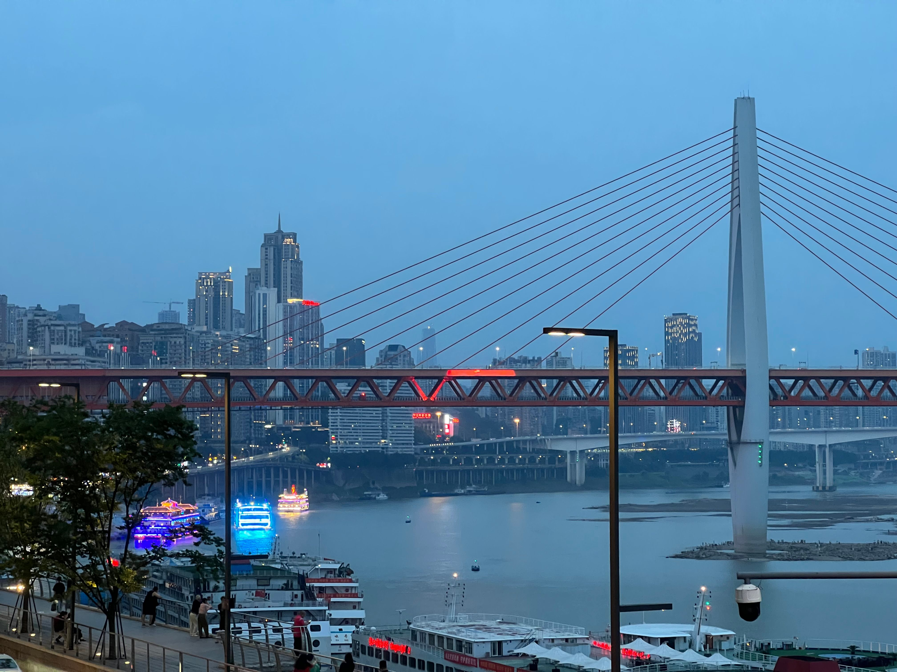

DESTINATION GUIDE

DESTINATION GUIDE
重庆依两江而建，是一座立体展开的山城，也是西部陆海新通道的重要枢纽。桥梁、坡地与码头记忆塑造独特风貌，江北国际机场和铁路网络让这座西南门户紧密连接全国。
位于中国西南部，两江交汇，山地地貌让城市空间沿江岸和坡地层层铺开。
亚热带湿润气候
温暖湿润、雨水充沛，夏季炎热，冬季温和少雪，山城云雾天气较为常见。
古为巴国区域，长江水运带来长期繁荣；近代开埠及抗战时期的历史进一步塑造城市。
码头文化、桥梁与梯坎共同形成山城记忆，立体交通也成为日常生活的一部分。
高差较大，步行请穿舒适鞋；雨雾天气出行宜预留更多时间。